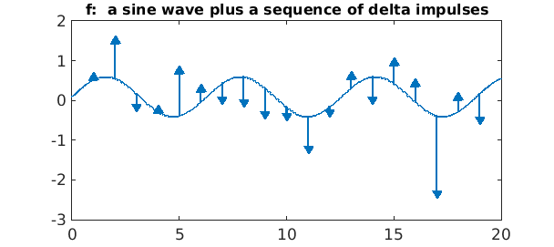
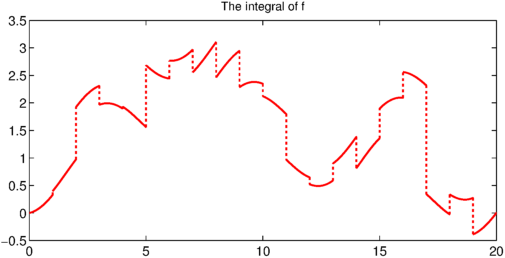
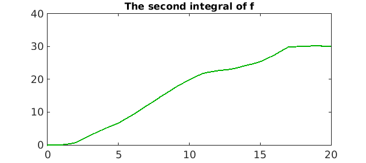
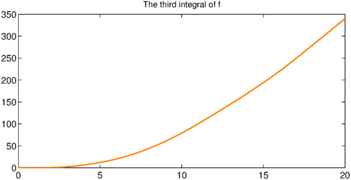
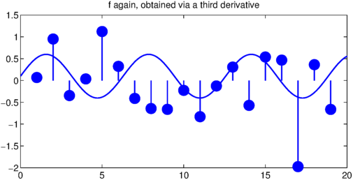

Here is a sine wave on the interval $[0,20]$ to which have been added a sequence of Dirac delta functions of random amplitudes, with a constant function then subtracted to make the mean zero:
x = chebfun('x',[0 20]);
f = 0.5*sin(x);
rng(3)
for j = 1:19
f = f + randn*dirac(x-j);
end
f = f - mean(f);
LW = 'linewidth'; lw = 1.6; FS = 'fontsize'; fs = 12;
plot(f,LW,1.6)
title('f: a sine wave plus a sequence of delta impulses',FS,fs)

Can you explain each of these numbers?
max(f)
ans = Inf
min(f)
ans = -Inf
sum(f)
ans =
-4.440892098500626e-16
norm(f,1)
ans = 17.151699883096875
norm(f,2)
ans = Inf
norm(f,inf)
ans = Inf
If we integrate $f$ with cumsum, each delta function becomes a jump. The value at the left is $0$ because cumsum always does that, and the value at the right is $0$ because $f$ has zero mean.
g = cumsum(f);
plot(g,'r',LW,1.6)
title('The integral of f',FS,fs)

If we integrate a second time, we get a continuous function, that is, a function of class $C^0$:
h = cumsum(g);
plot(h,LW,1.6,'color',[0 .7 0])
title('The second integral of f',FS,fs)

Our eye is good at detecting this degree of non-smoothness. One final integration gives a $C^1$ function whose lack of smoothness is not so obvious:
q = cumsum(h);
plot(q,LW,1.6,'color',[1 .5 0])
title('The third integral of f',FS,fs)

Taking the third derivative of this last function brings us back where we started:
f2 = diff(q,3);
plot(f2,LW,1.6)
title('f again, obtained via a third derivative')
